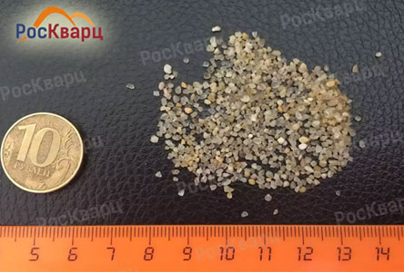

<div rold="dialog" tabindex="-1" data-id="good1" class="modal fade good"><div role="document" class="modal-dialog modal-lg"><div class="modal-content"><a href="#" class="close"><span class="glyphicon glyphicon-remove"></span></a><div class="padding-div"><h2 class="title">Кварцевый песок для фильтрации и водоподготовки окатанный мелкозернистый</h2><div class="item-container"><div class="item"><p>Фракция <span>0.3-06 мм</span></p></div><div class="item"><p>Фракция <span>0.3-06 мм</span></p></div><div class="item"><p>Фракция <span>0.3-06 мм</span></p></div><div class="item"><p>Фракция <span>0.3-06 мм</span></p></div></div></div><div class="footer"><div class="sides"><div class="text"><h3>от 2 500 руб./тонна</h3><p>Минимальный общий объем заказа - <b>1 тонна</b> <br/>Фасовка - мешки по 25 кг или МКР по 1 тонне</p></div></div><div class="sides"><div class="simple-form"><div class="before"><span>Конечная цена зависит от объёма заказа, фасовки и города доставки.</span><form><h2>Для расчёта конечной стоимости отправьте заявку:</h2><input type="text" name="name" placeholder="Ваше имя"/><input type="tel" name="" placeholder="Ваш телефон"/><input type="submit" value="Отправить заявку" class="btn default"/></form></div><div class="success"><h2>Спасибо! В ближайшее время с вами свяжется наш оператор.</h2></div></div></div></div></div></div></div>